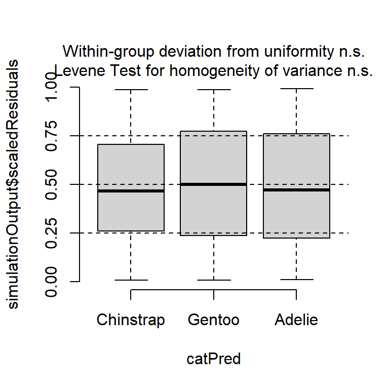

#install.packages("palmerpenguins")
#install.packages(c("palmerpenguins", "ggplot2", "dplyr", "knitr", "DHARMa", "emmeans", "multcompView", "multcomp", "broom", "pander"))Einführung in R Markdown - Penguins
Pakete laden
library(palmerpenguins)
library(ggplot2)
library(dplyr)
library(knitr)
library(DHARMa)
library(emmeans)
library(multcompView)
library(multcomp)
library(broom)
library(pander)Daten laden
data(penguins)
df=penguinsStruktur prüfen & Daten kennenlernen
str(df)
summary(df)Wir haben 344 Beobachtungen.
Wir haben 344 Beobachtungen.
- 3 Faktoren
- 5 kontinuierliche Variablen
- 3 Arten
- 3 Inseln
- Missing values
colSums(is.na(df))
df <- df %>%
mutate(species = factor(species, levels = c("Chinstrap", "Gentoo", "Adelie")))
df1 = df %>% filter(complete.cases(.))
df2 = df %>% filter(complete.cases(body_mass_g))
df %>%
count(species, island)Tabelle Summary Statistics
df %>%
group_by(species) %>%
summarise(
n = sum(!is.na(body_mass_g)),
mean_body_mass_g = round(mean(body_mass_g, na.rm = TRUE), 1),
sd_body_mass_g = round(sd(body_mass_g, na.rm = TRUE), 1),
median_body_mass_g = round(median(body_mass_g, na.rm = TRUE), 1),
min_body_mass_g = min(body_mass_g, na.rm = TRUE),
max_body_mass_g = max(body_mass_g, na.rm = TRUE)
)# A tibble: 3 × 7
species n mean_body_mass_g sd_body_mass_g median_body_mass_g
<fct> <int> <dbl> <dbl> <dbl>
1 Chinstrap 68 3733. 384. 3700
2 Gentoo 123 5076 504. 5000
3 Adelie 151 3701. 459. 3700
# ℹ 2 more variables: min_body_mass_g <int>, max_body_mass_g <int>mit library(knitr) und der Funktion kable()
df %>%
group_by(species) %>%
summarise(
n = sum(!is.na(body_mass_g)),
mean_body_mass_g = round(mean(body_mass_g, na.rm = TRUE), 1),
sd_body_mass_g = round(sd(body_mass_g, na.rm = TRUE), 1),
median_body_mass_g = round(median(body_mass_g, na.rm = TRUE), 1),
min_body_mass_g = min(body_mass_g, na.rm = TRUE),
max_body_mass_g = max(body_mass_g, na.rm = TRUE)
) %>%
kable(
caption = "Zusammenfassung der Körpermasse pro Pinguinart (in g)",
col.names = c("Art", "n", "Mittelwert", "StdAbw", "Median", "Min", "Max")
)| Art | n | Mittelwert | StdAbw | Median | Min | Max |
|---|---|---|---|---|---|---|
| Chinstrap | 68 | 3733.1 | 384.3 | 3700 | 2700 | 4800 |
| Gentoo | 123 | 5076.0 | 504.1 | 5000 | 3950 | 6300 |
| Adelie | 151 | 3700.7 | 458.6 | 3700 | 2850 | 4775 |
Abbildungen
ggplot(df, aes(x = species, y = body_mass_g, fill = species)) +
stat_boxplot(geom ="errorbar", width = 0.3)+
geom_boxplot(outlier.shape=NA, width=0.5) +
geom_jitter(width=0.1, height=0, shape=16, alpha=0.5)+
stat_summary(fun = "mean", colour = 1, fill="grey", size = 1, shape=21) +
scale_y_sqrt()+
scale_fill_manual(values = species_colors)+
labs(x = "Art",
y = "Körpergewicht (g)") +
theme_bw()+
theme(legend.position = "none")
ANOVA
Modell formulieren
mod<-lm(sqrt(body_mass_g) ~ species, data=df)
anova(mod)Analysis of Variance Table
Response: sqrt(body_mass_g)
Df Sum Sq Mean Sq F value Pr(>F)
species 2 8437.2 4218.6 331.93 < 2.2e-16 ***
Residuals 339 4308.4 12.7
---
Signif. codes: 0 '***' 0.001 '**' 0.01 '*' 0.05 '.' 0.1 ' ' 1summary(mod)
Call:
lm(formula = sqrt(body_mass_g) ~ species, data = df)
Residuals:
Min 1Q Median 3Q Max
-9.0578 -2.6022 -0.1917 2.5277 8.3836
Coefficients:
Estimate Std. Error t value Pr(>|t|)
(Intercept) 61.0193 0.4323 141.144 <2e-16 ***
speciesGentoo 10.1394 0.5387 18.821 <2e-16 ***
speciesAdelie -0.3015 0.5206 -0.579 0.563
---
Signif. codes: 0 '***' 0.001 '**' 0.01 '*' 0.05 '.' 0.1 ' ' 1
Residual standard error: 3.565 on 339 degrees of freedom
(2 Beobachtungen als fehlend gelöscht)
Multiple R-squared: 0.662, Adjusted R-squared: 0.66
F-statistic: 331.9 on 2 and 339 DF, p-value: < 2.2e-16Modellannahmen prüfen
simulationOutput <- simulateResiduals(fittedModel = mod, plot = F)
plot(simulationOutput)
plotResiduals(simulationOutput, form = df2$species)# NAs in df, besser gleich mit df2 rechnen
Modell interpretieren
geschätzte Koeffizienten
mod%>%
tidy() %>%
kable(col.names = c("Predictor", "Est", "SE", "t", "p-value"),
digits=c(0,2,2,1,4))| Predictor | Est | SE | t | p-value |
|---|---|---|---|---|
| (Intercept) | 61.02 | 0.43 | 141.1 | 0.0000 |
| speciesGentoo | 10.14 | 0.54 | 18.8 | 0.0000 |
| speciesAdelie | -0.30 | 0.52 | -0.6 | 0.5629 |
Die Modellkoeffizienten beziehen sich auf das wurzel-transformierte Körpergewicht in g. Das R² des Modells beträgt 66.2.
PostHoc-Test
CIs=cld(emmeans(mod, ~species, type="response"), adjust="sidak", sort = FALSE, Letters=letters)
CIs$.group # hier sind noch Leerzeichen enthalten, die die Zentrierung der Buchstaben erschwert[1] " a " " b" " a "CIs$.group =gsub(" ", "", CIs$.group, fixed = TRUE)# entfernen der Leerzeichen
CIs$.group # besser[1] "a" "b" "a"str(CIs)Classes 'summary_emm' and 'data.frame': 3 obs. of 7 variables:
$ species : Factor w/ 3 levels "Chinstrap","Gentoo",..: 1 2 3
$ response: num 3723 5064 3687
$ SE : num 52.8 45.7 35.2
$ df : num 339 339 339
$ lower.CL: num 3598 4954 3603
$ upper.CL: num 3851 5174 3772
$ .group : chr "a" "b" "a"
- attr(*, "estName")= chr "response"
- attr(*, "clNames")= chr [1:2] "lower.CL" "upper.CL"
- attr(*, "pri.vars")= chr "species"
- attr(*, "adjust")= chr "sidak"
- attr(*, "side")= num 0
- attr(*, "delta")= num 0
- attr(*, "type")= chr "response"
- attr(*, "mesg")= chr [1:7] "Confidence level used: 0.95" "Conf-level adjustment: sidak method for 3 estimates" "Intervals are back-transformed from the sqrt scale" "Note: contrasts are still on the sqrt scale. Consider using\n regrid() if you want contrasts of back-trans"| __truncated__ ...
- attr(*, "linkname")= chr "sqrt"CIs species response SE df lower.CL upper.CL .group
Chinstrap 3723 52.8 339 3598 3851 a
Gentoo 5064 45.7 339 4954 5174 b
Adelie 3687 35.2 339 3603 3772 a
Confidence level used: 0.95
Conf-level adjustment: sidak method for 3 estimates
Intervals are back-transformed from the sqrt scale
Note: contrasts are still on the sqrt scale. Consider using
regrid() if you want contrasts of back-transformed estimates.
P value adjustment: sidak method for 3 tests
significance level used: alpha = 0.05
NOTE: If two or more means share the same grouping symbol,
then we cannot show them to be different.
But we also did not show them to be the same. CIp=data.frame(pairs(regrid(emmeans(mod, ~species)), adjust="sidak"))
CIp contrast estimate SE df t.ratio p.value
1 Chinstrap - Gentoo -1340.20744 69.83099 339 -19.1921594 0.000000
2 Chinstrap - Adelie 36.70404 63.44083 339 0.5785555 0.916703
3 Gentoo - Adelie 1376.91148 57.74053 339 23.8465335 0.000000Abbildung Daten und geschätzte Mittelwerte und Konfidenzintervall
ggplot(df, aes(x = species, y = body_mass_g, fill = species)) +
stat_boxplot(geom ="errorbar", width = 0.3)+
geom_boxplot(outlier.shape=NA, width=0.5) +
geom_jitter(width=0.1, height=0, shape=16, alpha=0.5)+
geom_errorbar(data=CIs, aes(y=response, ymin=lower.CL, ymax=upper.CL),
width=0.1, col="grey50", position = position_nudge(x = 0.4))+
geom_point(data=CIs, aes(y=response),
shape=16, size=2, col="grey50",
position = position_nudge(x = 0.4))+
geom_text(data=CIs, aes(y = 7000, label =.group))+
scale_y_sqrt()+
scale_fill_manual(values = species_colors)+
labs(x = "Art",
y = "Körpergewicht (g)") +
theme_bw()+
theme(legend.position = "none")Warning: Removed 2 rows containing non-finite outside the scale range
(`stat_boxplot()`).
Removed 2 rows containing non-finite outside the scale range
(`stat_boxplot()`).Warning: Removed 2 rows containing missing values or values outside the scale range
(`geom_point()`).
Die geschätzten mittleren Körpermassen (mit 95%-Konfidenzintervallen) sind:
kable(CIs[,c(1,2,5,6)], caption = "Geschätztes mittlere Körpergewicht pro Art (g) .",
col.names = c("Art", "geschätzter Mittelwert", "Untere 95%-Konfidenzgrenze", "Obere 95%-Konfidenzgrenze"))| Art | geschätzter Mittelwert | Untere 95%-Konfidenzgrenze | Obere 95%-Konfidenzgrenze |
|---|---|---|---|
| Chinstrap | 3723.358 | 3597.833 | 3851.036 |
| Gentoo | 5063.565 | 4954.386 | 5173.935 |
| Adelie | 3686.654 | 3602.600 | 3771.677 |
Oder wir schreiben im Text:
Wir sehen, dass die Gentoo-Pinguine mit einem durchschnittlichen Körpergewicht von etwa 5064 g signifikant schwerer sind als Adelie (p < 0.0001) und Chinstrap (p < 0.0001) Pinguine, welche ein durchschnittliches Körpergewicht von rund 3687 g und 3723 g aufweisen. Adelie und Chinstrap unterscheiden sich nicht signifikant (p = 0.92).
Dank an “Artwork by @allison_horst”.

citation("palmerpenguins")To cite palmerpenguins in publications use:
Horst AM, Hill AP, Gorman KB (2020). palmerpenguins: Palmer
Archipelago (Antarctica) penguin data. R package version 0.1.0.
https://allisonhorst.github.io/palmerpenguins/. doi:
10.5281/zenodo.3960218.
Ein BibTeX-Eintrag für LaTeX-Benutzer ist
@Manual{,
title = {palmerpenguins: Palmer Archipelago (Antarctica) penguin data},
author = {Allison Marie Horst and Alison Presmanes Hill and Kristen B Gorman},
year = {2020},
note = {R package version 0.1.0},
doi = {10.5281/zenodo.3960218},
url = {https://allisonhorst.github.io/palmerpenguins/},
}Abschließende sessionInfo
sessionInfo()R version 4.5.1 (2025-06-13 ucrt)
Platform: x86_64-w64-mingw32/x64
Running under: Windows 10 x64 (build 19044)
Matrix products: default
LAPACK version 3.12.1
locale:
[1] LC_COLLATE=German_Germany.utf8 LC_CTYPE=German_Germany.utf8
[3] LC_MONETARY=German_Germany.utf8 LC_NUMERIC=C
[5] LC_TIME=German_Germany.utf8
time zone: Europe/Berlin
tzcode source: internal
attached base packages:
[1] stats graphics grDevices utils datasets methods base
other attached packages:
[1] pander_0.6.6 broom_1.0.10 multcomp_1.4-29
[4] TH.data_1.1-3 MASS_7.3-65 survival_3.8-3
[7] mvtnorm_1.3-3 multcompView_0.1-10 emmeans_2.0.0
[10] DHARMa_0.4.7 knitr_1.50 dplyr_1.1.4
[13] ggplot2_4.0.0 palmerpenguins_0.1.1
loaded via a namespace (and not attached):
[1] utf8_1.2.6 tidyr_1.3.1 sandwich_3.1-1 generics_0.1.4
[5] lattice_0.22-7 lme4_1.1-37 digest_0.6.37 magrittr_2.0.3
[9] evaluate_1.0.5 grid_4.5.1 estimability_1.5.1 RColorBrewer_1.1-3
[13] fastmap_1.2.0 jsonlite_2.0.0 Matrix_1.7-3 backports_1.5.0
[17] purrr_1.1.0 scales_1.4.0 codetools_0.2-20 reformulas_0.4.1
[21] Rdpack_2.6.4 cli_3.6.5 rlang_1.1.6 rbibutils_2.3
[25] splines_4.5.1 withr_3.0.2 yaml_2.3.10 tools_4.5.1
[29] nloptr_2.2.1 coda_0.19-4.1 minqa_1.2.8 gap.datasets_0.0.6
[33] boot_1.3-32 vctrs_0.6.5 R6_2.6.1 zoo_1.8-14
[37] lifecycle_1.0.4 htmlwidgets_1.6.4 pkgconfig_2.0.3 pillar_1.11.0
[41] gtable_0.3.6 glue_1.8.0 Rcpp_1.1.0 xfun_0.52
[45] tibble_3.3.0 tidyselect_1.2.1 rstudioapi_0.17.1 xtable_1.8-4
[49] farver_2.1.2 htmltools_0.5.8.1 nlme_3.1-168 labeling_0.4.3
[53] rmarkdown_2.29 compiler_4.5.1 gap_1.6 S7_0.2.0